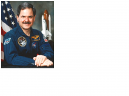

Please note: the AAS Obituaries are temporarily being hosted on this website while their full content is being ingested into the PubPub publishing platform newly adopted by the Bulletin of the American Astronomical Society. When the migration is complete, your existing links will take you to the final, migrated content. Contact peter.williams@aas.org with any questions.
Ronald A. Parise (1951-2008)
Ronald A. Parise, astronomer and astronaut, passed away at his home in Burtonsville, Maryland, in the presence of his family on 9 May 2008. He died of a brain tumor at age 56 after several years of valiant struggle. He was an inspiration to many students, ham operators, astronomers, and friends the world over. His enthusiasm for astronomy and space exploration was infectious. We, colleagues at Goddard Space Flight Center and Computer Sciences Corporation, treasured his contributions to space astronomy and human spaceflight.
Ron, along with Samuel Durrance, flew as Payload Specialist on Astro-1 and Astro-2. They were selected by peers from the instrument teams of the Hopkins Ultraviolet Telescope (HUT provided by Hopkins University), the Ultraviolet Imaging Telescope (UIT, Goddard Space Flight Center) and the Wisconsin Ultraviolet Photo-Polarimetry Experiment (WUPPE, University of Wisconsin). Astro-1 flew 2-10 December 1990 on the Columbia. Astro-2 flew 2-18 March 1995. Ron carried along amateur radio equipment and operated on the air during his free time during the missions.
Ron was born 24 May 1951 in Warren, Ohio, to Henry and Catherine Parise. His interests first were in amateur radio, becoming a licensed operator by age eleven. He later was attracted to both astronomy and aviation, becoming a pilot in his teens. Ron graduated from Western Reserve High School in 1969 and attended Youngstown State University where he received a bachelor of science degree in physics with minors in mathematics, astronomy. and geology. His graduate work was at University of Florida where he obtained a masters degree in 1977 and a doctorate in 1979 in astronomy.
Ron joined Operations Research, Inc. upon graduation, working at Goddard Space Flight Center where he supported studies of several NASA missions. In 1980 he joined Computer Sciences Corporation supporting the International Ultraviolet Explorer [IUE], first as a data-management scientist and later as the section manager of the IUE hardcopy facility. By 1981 he joined a team of engineers and scientists beginning the development of the newly selected the Ultraviolet Imaging Telescope (UIT), selected by NASA to fly on board the space shuttles as an attached Spacelab experiment. The UIT project, headed by Ted Stecher as Principal Investigator, was one of three ultraviolet experimental telescopes selected to fly together as an Office of Space Sciences [OSS] payload. Initial plans were for multiple flights with emphasis of observing Halley's Comet in three missions from November 1985 to summer 1986.
Ron's responsibilities involved flight hardware and software development, electronic system design, and mission planning activities for UIT. His proficiency led to his selection by the Principal Investigators of the three instruments as a Payload Specialist candidate and acceptance by NASA as one of three payload specialists in support of the series of missions. He, Samuel Durrance, and Kenneth Nordsieck shouldered the responsibilities of training as payload specialists for the instruments integrated on a common pointer, the Spacelab Instrument Pointing System, IPS. As a team they represented the operational needs of the instrument teams and trained to fly with the shuttle team. Preparations moved forward to the March 1986 launch date of Astro-1 to observe Comet Halley and well over a hundred astronomical sources.
Unfortunately, the Challenger accident occurred 28 January 1986, thirty-five days before the intended launch date of Astro-1. Ron and Sam, as prime Payload Specialists, and Ken as backup/ ground communicator, took the delay well, staying focused on training to ensure that Astro-1, delayed until December 1990, would be an outstanding success. With at least thirteen launch delays, and on-orbit operational problems, they, the professional astronaut crew, the science teams, and the multitude of engineers and mission support staff managed to accomplish a very successful astronomy mission. Even though Comet Halley was not observed by Astro-1, well over a hundred papers on multiple astronomical sources resulted from Astro-1 and Astro-2.
Ron participated in a number of observational astronomy projects using data from ground-based observatories, Copernicus, IUE, and the Astro observatory. His interests were primarily in circumstellar matter within binary star systems and globular- cluster evolution. He bridged the gaps between science, engineering, and spaceflight operations. After the completion of the two Astro missions, Ron supported NASA studies in advanced communications for spaceflight missions and was involved in projects in the Advanced Architectures and Automation Branch developing standard Internet Protocols [IP] in space-data transmission applications.
Throughout his career, Ron supported education both by appearances at schools and through his amateur radio interests. Indeed, he had a large following of ham radio operators as he, along with Frank Bauer, brought about the Shuttle Amateur Radio Experiment [SAREX] payload that enabled many schools to talk to Shuttle crew members in space. Ron's love for amateur radio and for inspiring students came to focus through the Amateur Radio on the International Space STation [ARISS] program. His volunteer help was key in the development of those systems now on board the ISS.
As Frank Bauer, a ham colleague, put it in his tribute to Ron Parise, WA4SIR SK: may your exploration spirit live on in us all!
Ron leaves behind his wife, Cecilia; son, Nicholas; daughter, Katharine; his parents Henry and Kathryn Parise; and sister, Rita Parise.
Obituary written by: Theodore R. Gull (former Astro Mission Scientist)
BAAS Citation: BAAS, 2009, 41, 573
SAO/NASA ADS Bibcode: 2009BAAS...41..573G